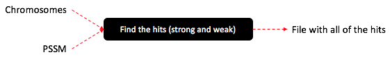

Do you want an explaination of my project?
Contributors: John M. Letey (John.Letey@colorado.edu) and David A. Knox (David.Knox@colorado.edu).
Notes: To get to my GitHub repository, go to this website. For instructions on how to use my repository, go here.
This project follows the below pipeline.
I have broken this project into to major portions. The first portion calculates the hits (weak and strong transcription factor binding sights) for a specified chromosome and transcription factor. The second portion analyses these hits. Let's talk about these two portions more in depth.
To calculate the hits, I read in from a file called input.txt which is formatted as follows:
| Line Number | Description |
|---|---|
| 1 | Name of fasta file |
| 2 | Name of tamo file |
| 3 | Weak threshold value |
| 4 | Strong threshold value |
| 5 | Size of each category of distances between sites |
| 6 | Maximum allowed plus/minus distance between a strong and weak site |